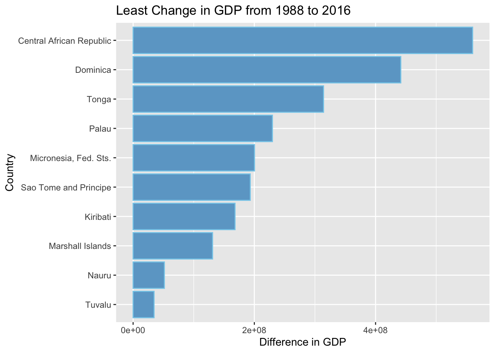
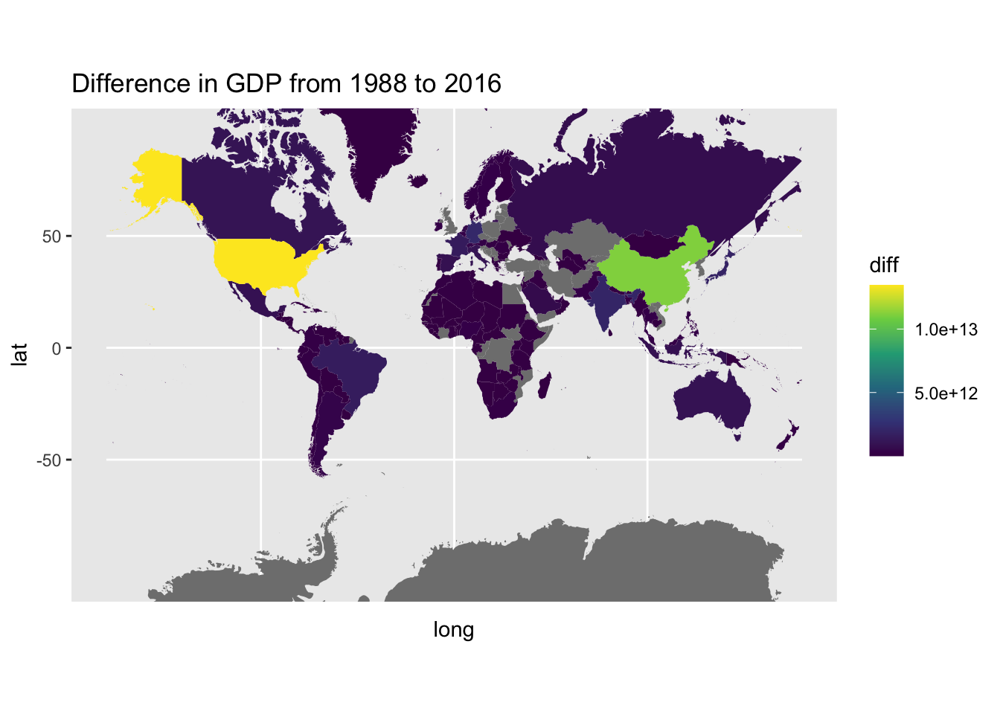

Venezuela’s Development: Case Study (Blog Post #2)
The data was taken from an already existing R package called “World Bank World Development Indicators” (https://tidy-intelligence.github.io/r-wbwdi/). This package has all of the World Bank’s indicators for economic development. For this blog post, I choose the “NY.GDP.MKTP.CD” variable, which is Gross Domestic Product (in current USD, not adjusted for inflation). The goal of this blog post is to explore the data in the context of world GDP development from 1988 to 2016. I choose these years, as I am interested at looking how GDP had changed in contrast to the Venezuela economy particularly, and these were pivotal year peaks in Venezuelan GDP (source: World Bank Data).
ggplot(data = least_developed, aes(y = entity_name, x = diff)) +geom_col(fill ="skyblue3", colour ="skyblue") +labs(title ="Least Change in GDP from 1988 to 2016", y ="Country", x ="Difference in GDP")

World Map:
## data for map:world_map <-map_data("world")gdp_clean_ven <- gdp_clean |>group_by(entity_name) |>mutate(higher_gdp =if_else(diff >52688620469, true ="Yes", false ="No"))world_joined <-left_join(world_map, gdp_clean, join_by(region == entity_name))## world map:ggplot(data = world_joined, aes(x = long, y = lat, group = group)) +geom_polygon(aes(fill = diff)) +coord_map(projection ="mercator") +scale_fill_viridis_c() +xlim(c(-180, 180)) +labs(title ="Difference in GDP from 1988 to 2016")

Generally, there seems to be a wide gap in GDP growth. As seen in the map, there are very few ‘winners’ in the GDP growth context (closer to Yellow in the scale). Whereas, the rest of the world (majority) are a dark purple, indicating that they had the very least GDP growth. If we look at Venezuela, our country of interest, this holds. It seems to be in the darkest shade of dark purple.
It is important to note, that during data exploration, Venezuela was not in the top 20 for least economic development. This tells us that the scale here is very extreme, where the biggest GDP growth is extremely large, compared to GDP Growth in other countries.
Conclusion & Connection to class:
In order to confirm the above, we can quickly calculate the mean GDP growth of the world and compare it to the top 10 GDP growth countries:
## mean world: gdp_clean |>summarise(mean(diff))
# A tibble: 1 × 1
`mean(diff)`
<dbl>
1 316673974449.
## 316 Billion USD## mean top GDP growth: most_developed |>summarise(mean(diff))
# A tibble: 1 × 1
`mean(diff)`
<dbl>
1 3.77e12
## 3.7 Trillion USD
So, we can conclude that the mean GDP growth in the top ten countries is much larger than the rest of the world. Venezuela is in that ‘rest of the world’ category, not as extreme as the ones presented in this data set, which was my personal expectation at the beginning of this exploration.
Connection to class: through maps, it was a good tool to look at overall world outliers, and look at the way that the data is ‘distributed’ without actually looking at the distribution. I think using a map in this context is the best way to get this disparity across to a non-stats background person.